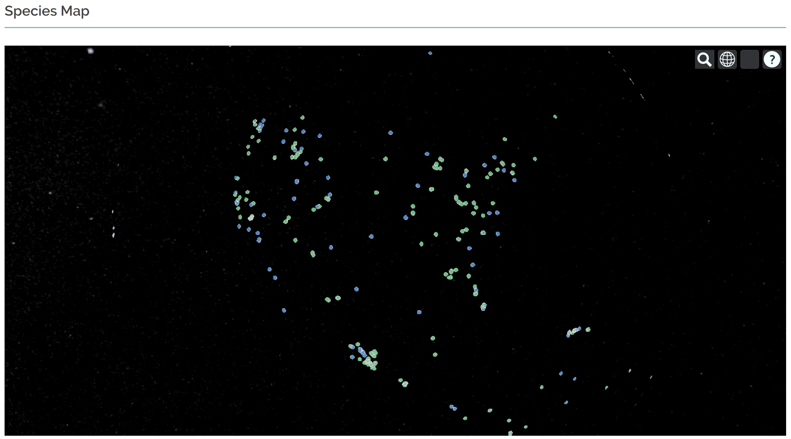
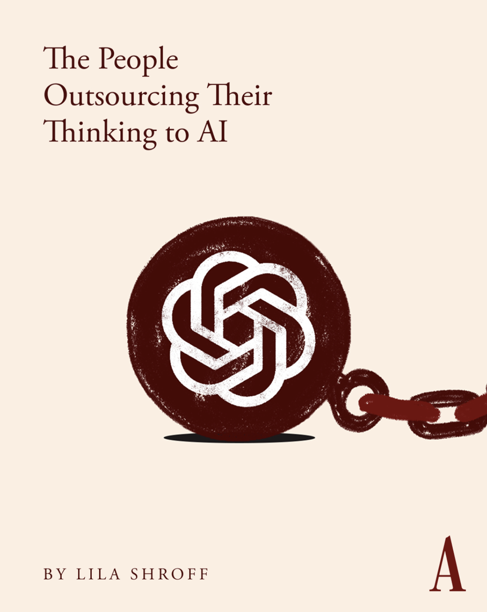

Introductions
SDS 192: Introduction to Data Science
Welcome!

- Course: SDS 192, Sect. 02
- Times:
- M, 1:40-2:55pm
- W/F, 1:20-2:35pm
Welcome!
- Instructor: Jericho Lawson
- Location: McConnell 207
- Office Hours:
- M, 3-4pm
- F, 10am-12pm
- Email: jlawson01@smith.edu




Sources: NYT, Compadre DB, The Atlantic
What is data science? Common view:
- Interdisciplinary field combining computer science, mathematics/statistics, and domain expertise to extract meaningful information from unstructured data points

What is data science? My view:
- Interdisciplinary field combining computer science, mathematics/statistics, and domain expertise to extract meaningful information from unstructured data points
- Includes the human aspect: use of aesthetics, situational context, and communication to explain the data to the world
Case Study 1: ACLU Fights Discriminatory Housing
- American Civil Liberties Union employs data scientists to produce insights regarding discriminatory laws and practices
- Findings are presented in courts, legislatures, and public reports
- In this study, they use public data to show that excluding people with criminal records from housing can be viewed as a violation of the US Fair Housing Act.

Case Study 2: EPA Tracks Environmental Injustice
- Environmental Protection Agency hires data scientists to produce insights regarding environmental health risks
- Findings implicate environmental policies, funding allocations, and legal actions against states and industries
- This tool, visualizes environmental and demographic indicators to highlight communities experiencing environmental injustices.

Case Study 3: Geena Davis Institute Studies Gender Biases in Films
- Geena Davis Institute collaborated with University of Southern California’s Signal Analysis and Interpretation Laboratory (SAIL)
- Developed a machine learning tool to measure representation of diverse groups in films by studying screen time and speaking

Topics covered in this course
- Data visualization
- Data wrangling
- Programming with data (via R)
- Data retrieval
- Data science infrastructures and workflows
- Data science ethics
- Mapping